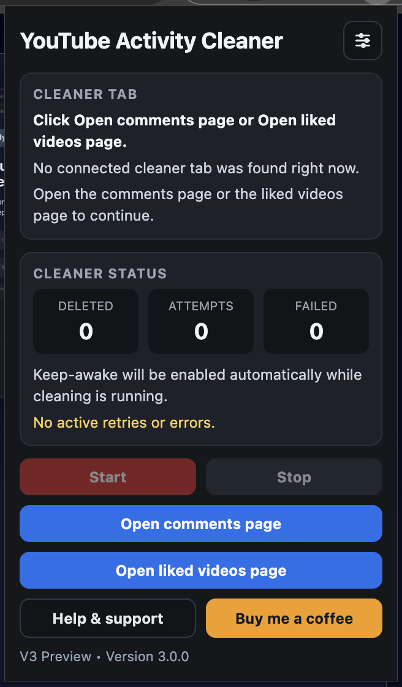

Chrome Extension
YouTube Activity Cleaner
Clean comments, comment likes, live chat history, community posts, and liked videos with a focused, local-first MV3 extension.

Key Features
Fast or Safe mode. Choose a more aggressive run profile or a more conservative one before starting.
Retry and backoff. The cleaner retries failed delete flows with clear status messages and failure protection.
Local settings. Pacing and retry preferences are saved locally in Chrome and reused on the next run.
No cloud backend. The extension uses browser permissions only for tabs, power keep-awake, and local storage.
How To Use
- Click the extension.
- Use one of the popup shortcuts for comments, comment likes, live chat history, community posts, or liked videos.
- When the page finishes loading, click
Start.
Keep that page visible while the cleaner is working. You can use Stop
any time.
The current beta is best tested with the interface in English and Polish.
Current Status
- Comments, comment likes, live chat history, community posts, and liked videos cleanup are implemented in the current v4 build.
- The popup includes shortcuts, saved settings, counters, reconnect handling, and keep-awake support.
- Localization coverage is focused on the English and Polish Google My Activity interface, with release work now mainly in manual QA, final screenshots, and store setup.
Update Plan
Copy cleanup.
- Keep the main instruction as one short 3-step flow.
- Use the popup shortcut pattern consistently:
Open ...andStart. - Reduce extra setup wording so the first screen is focused on starting fast.
Screenshots to add.
- Popup opened on a normal tab with both blue quick-link buttons visible.
- Comments page loaded with the popup ready to start.
- Comment likes page loaded with the popup ready to start.
- Live chat history page loaded with the popup ready to start.
- Community posts page loaded with the popup ready to start.
- Liked videos page loaded with the popup ready to start.
- Cleaner running with counters changing and the
Stopbutton visible. - Settings panel open with the profile and pacing controls visible.